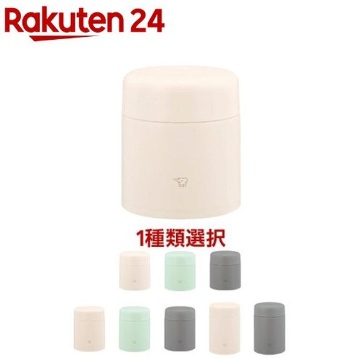
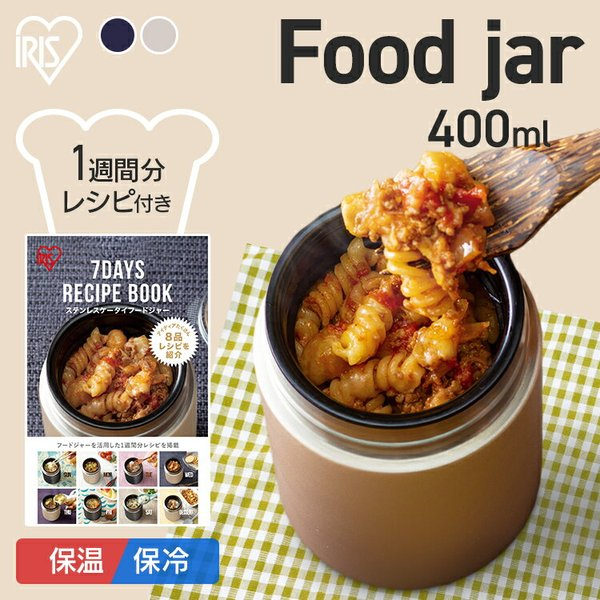
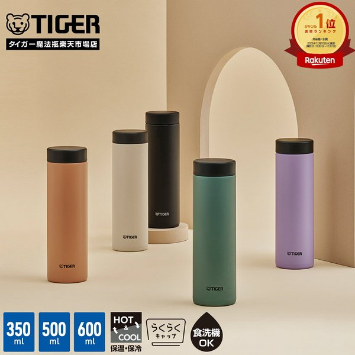
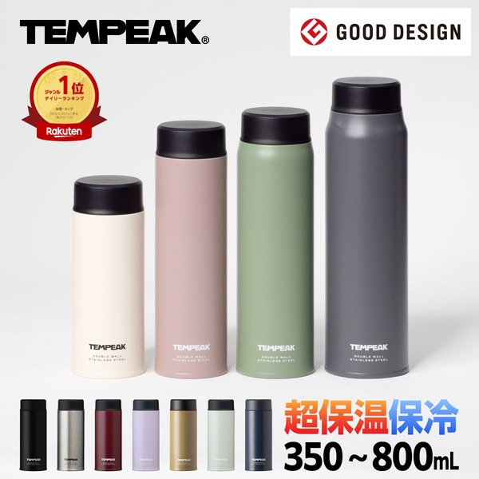
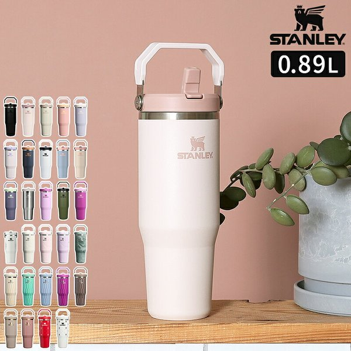
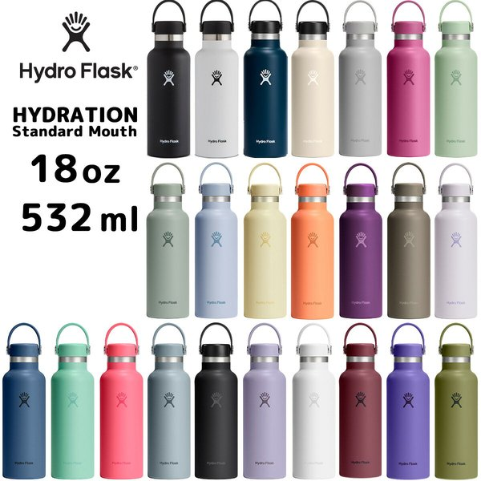
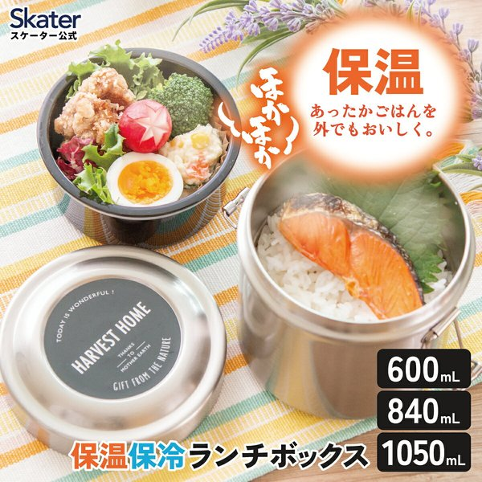
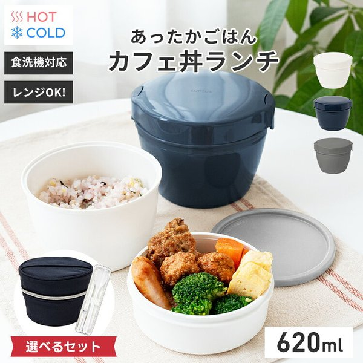
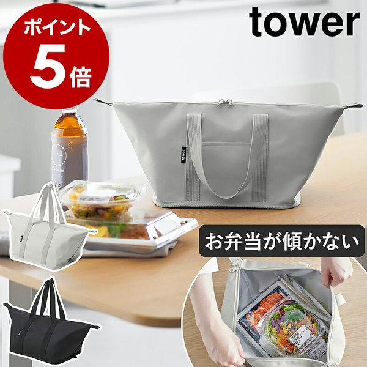

【2026年冬】節約＆温活ランチに！スープジャー・保温弁当箱・魔法瓶水筒（マイボトル）＆ランチバッグおすすめ10選
冬の昼ごはんは、外に出ると時間もお金もかかります。1食1,000円のランチが週3回なら、月に1万2,000円。そこを温かいお弁当に変えるだけで、出費が減るうえに、体の芯から冷えにくくなります。
揃える道具は3つです。汁物を温かいまま持っていくスープジャー、ご飯とおかずを温かいまま食べる保温弁当箱、そして飲み物を持ち歩く魔法瓶水筒。この3つがあれば、コンビニ弁当しか選べない日が減ります。スープジャーは0.4L前後が昼食1回にちょうどよく、保温弁当箱は600〜800mlが男性の量の目安です。水筒は、食洗機に対応しているかを必ず確認してください。毎日洗うものなので、手洗いが要るかどうかで続けられるかが変わります。最後に、保冷バッグを1つ足すと、夏は保冷剤と組み合わせて一年中使えます。
本記事では、楽天市場で人気・高評価の冬のランチ保温グッズ10選を、実売価格とレビュー評価つきで写真付き紹介します。
- おすすめ10選 スペック・特徴比較表
- BEST 1｜真空断熱スープジャー 0.4L JED-400
- BEST 2｜ステンレススープジャー シームレスせん SW-LA（300／400／520ml）
- BEST 3｜スープジャー 400ml SFJ-400（1週間分レシピ付き）
- BEST 4｜真空断熱ボトル らくらくキャップ MMZ（350／500／600ml）
- BEST 5｜超保温スクリューマグボトル ATPBS（350／500／600／800ml）
- BEST 6｜アイスフロー フリップストロー 2.0 0.89L
- BEST 7｜スタンダードマウス 18oz 532ml
- BEST 8｜保温弁当箱 どんぶり2段 STLB（600／840／1050ml）
- BEST 9｜保温弁当箱 カフェ丼 2段 620ml
- BEST 10｜スーパー・コンビニ弁当がそのまま入る洗えるお弁当バッグ
- 【読者負担0円】買わなくても得する無料サービス
- まとめ：冬のランチ保温グッズ10選の選び方
| 順位 | 商品名 | ブランド | 最大の特徴・おすすめ理由 | 総合評価 |
|---|---|---|---|---|
| BEST 1 | 真空断熱スープジャー 0.4L JED-400 | サーモス（THERMOS） | 0.4Lでスープ1杯にちょうどいい | 4.52 |
| BEST 2 | ステンレススープジャー シームレスせん SW-LA（300／400／520ml） | 象印（ZOJIRUSHI） | フタを回さず片手で開けられる | 4.65 |
| BEST 3 | スープジャー 400ml SFJ-400（1週間分レシピ付き） | アイリスオーヤマ | 約275gと軽い | 4.33 |
| BEST 4 | 真空断熱ボトル らくらくキャップ MMZ（350／500／600ml） | タイガー魔法瓶 | パッキン一体型で洗いやすい | 4.69 |
| BEST 5 | 超保温スクリューマグボトル ATPBS（350／500／600／800ml） | TEMPEAK（アトラス） | 5層断熱で800mlは6時間後83℃以上 | 4.70 |
| BEST 6 | アイスフロー フリップストロー 2.0 0.89L | スタンレー（STANLEY） | フタを開けずストローで飲める | 4.59 |
| BEST 7 | スタンダードマウス 18oz 532ml | ハイドロフラスク（Hydro Flask） | 二重真空構造で保温・保冷の両対応 | 4.69 |
| BEST 8 | 保温弁当箱 どんぶり2段 STLB（600／840／1050ml） | スケーター（SKATER） | 真空二重構造でご飯が温かいまま | 4.47 |
| BEST 9 | 保温弁当箱 カフェ丼 2段 620ml | アスベル（ASVEL） | どんぶり型で丼ものをそのまま持ち運べる | 4.12 |
| BEST 10 | スーパー・コンビニ弁当がそのまま入る洗えるお弁当バッグ | 山崎実業（tower） | コンビニ弁当が傾かずに入る底面25×23cm | 4.55 |
真空断熱スープジャー 0.4L JED-400

朝に温めたスープやシチューを入れて、昼まで持たせられる定番のスープジャーです。容量は0.4Lで、丼ぶり一杯のスープならこれで足ります。フタと飲み口が分かれているので、開けたときに蒸気が一気に噴き出しにくく、デスクでも慌てずに食べられます。食洗機に対応しているのは毎日使うものとしては大きく、夜の洗い物がその分だけ減ります。カップ麺やコンビニ弁当が続いている人が、最初に買う1本として選びやすい価格です。楽天市場での実売価格は約3,279円（2026年11月時点）。
- 0.4Lでスープ1杯にちょうどいい
- 食洗機対応で毎日の手入れが楽
- フタと飲み口が分かれていて開けやすい
- 保温は6時間で58℃以上が目安なので、昼過ぎまで置くとぬるくなる
ステンレススープジャー シームレスせん SW-LA（300／400／520ml）

象印のスープジャーは、フタを回さずにワンタッチで開けられる「シームレスせん」が特徴です。手が塞がっている昼休みでも、片手で開けてそのまま食べられます。パーツがすべて食洗機に対応しているので、スープの油分が残りやすいパッキンまわりも機械に任せられます。容量は300ml・400ml・520mlの3つから選べ、汁物だけの日は300ml、丼ぶりも入れるなら520mlと、食べる量に合わせられます。楽天市場での実売価格は約3,569円（2026年11月時点）。
- フタを回さず片手で開けられる
- 全パーツ食洗機対応
- 300／400／520mlから選べる
- 口径が広いぶん、小さめのバッグでは場所を取る
スープジャー 400ml SFJ-400（1週間分レシピ付き）

アイリスオーヤマのスープジャーは、保温・保冷の両方に使える400mlのフードジャーです。約275gと軽く、通勤バッグに入れても重さを感じにくいのが利点。口が広いので注ぎやすく、樹脂製の飲み口はやさしい口あたりです。1週間分のレシピブックが付いてくるので、最初の1週間は献立を考えずに済みます。ミネストローネやシチュー、冷たい麺料理まで同じ容器で対応できます。楽天市場での実売価格は約2,180円（2026年11月時点）。
- 約275gと軽い
- 1週間分のレシピブック付き
- 保温・保冷の両用
- 食洗機には対応しておらず、パッキンは手洗いになる
真空断熱ボトル らくらくキャップ MMZ（350／500／600ml）

タイガー魔法瓶の水筒は、パッキンがフタと一体になった「らくらくキャップ」のモデルです。パッキンを外して溝を洗う手間がなく、食洗機にもそのまま入れられます。ワンタッチでフタが開くので、運転中や歩きながらでも片手で飲めます。容量は350ml・500ml・600mlの3サイズ。保温・保冷のどちらにも使え、冬は白湯やお茶、夏は麦茶と、一年を通して出番があります。楽天市場での実売価格は約2,380円（2026年11月時点）。
- パッキン一体型で洗いやすい
- 食洗機に対応
- 350／500／600mlから選べる
- 飲み物用の細口なので、具の入ったスープを入れると洗いにくい
超保温スクリューマグボトル ATPBS（350／500／600／800ml）

アトラスが扱う「TEMPEAK」シリーズのスクリューボトルです。5層の断熱構造に断熱材入りのふたを組み合わせ、800mlモデルでは6時間後も83℃以上を保つとしています（自社保温検査）。内面のクリーンミラー加工でにおいや汚れがつきにくく、コーヒーとお茶を同じボトルで使っても風味が移りにくいのが助かります。350mlから800mlまで4サイズあり、通勤なら500ml、部活や現場なら800mlと選べます。楽天市場での実売価格は約1,798円（2026年11月時点）。
- 5層断熱で800mlは6時間後83℃以上
- クリーンミラー加工でにおいが残りにくい
- 350〜800mlの4サイズ
- ふたは分解できないため、パッキンまわりは丁寧に洗う必要がある
アイスフロー フリップストロー 2.0 0.89L

スタンレーのアイスフローは、フタを開けずにストローで飲める保冷専用のタンブラーです。飲み口を起こすだけで水分補給ができ、デスクに置いたまま片手で飲めます。0.89Lと大容量なので、一日分の水や麦茶をまとめて持ち歩けます。ハンドル付きで、車のドリンクホルダーにも収まるサイズ感。保冷力は6時間で7℃以下が目安で、食洗機にも対応します。楽天市場での実売価格は約6,490円（2026年11月時点）。
- フタを開けずストローで飲める
- 0.89Lで一日分の水分をまとめて
- 食洗機に対応
- 保冷専用のため、温かい飲み物は入れられない
スタンダードマウス 18oz 532ml

ハイドロフラスクのスタンダードマウスは、18/8ステンレスを二重真空構造にした定番ボトルです。保温と保冷の両方に対応し、冬は白湯、夏は冷水と一年中使えます。表面のパウダーコートは汗をかいても滑りにくく、濡れた手でも持ちやすいのが利点。18oz（532ml）は、通勤バッグのサイドポケットに入る持ち歩きサイズです。カラー展開が多く、夫婦で色違いにする買い方もできます。楽天市場での実売価格は約4,950円（2026年11月時点）。
- 二重真空構造で保温・保冷の両対応
- パウダーコートで滑りにくい
- 18oz＝532mlの持ち歩きサイズ
- 口が細いので、ボトル用ブラシがないと底まで洗いにくい
保温弁当箱 どんぶり2段 STLB（600／840／1050ml）

スケーターのSTLBは、真空二重構造のどんぶり型2段弁当箱です。ご飯を下段、おかずを中容器に入れて、昼まで温かいまま食べられます。汁気の少ないカレーやあんかけ、温かい丼ものに向いた形で、電子レンジが使えない現場や車中でも便利です。容量は600ml・840ml・1050mlの3つ。中容器だけは電子レンジで温められ、抗菌加工も入っています。保温効力は6時間で56〜64℃以上が目安です。楽天市場での実売価格は約2,880円（2026年11月時点）。
- 真空二重構造でご飯が温かいまま
- 中容器だけ電子レンジで温められる
- 600／840／1050mlから選べる
- 本体は電子レンジも食洗機も使えず、洗うのは手作業になる
保温弁当箱 カフェ丼 2段 620ml

アスベルのカフェ丼は、どんぶり型の2段保温弁当箱です。ご飯とおかずを別々に詰められるので、丼ものや混ぜご飯でも食感が崩れません。620mlは男性の昼食でも足りる量で、深さがあるぶん汁気のあるおかずも入れやすい形です。軽量で、通勤バッグに入れてもかさばりません。保温タイプの弁当箱は重くなりがちですが、これは軽さを優先した作りで、毎日持ち歩く人に向いています。楽天市場での実売価格は約2,798円（2026年11月時点）。
- どんぶり型で丼ものをそのまま持ち運べる
- 620mlで食べ応えがある
- 軽量で通勤バッグに入れやすい
- 評価は4.12で、保温力より軽さと扱いやすさを優先した作り
スーパー・コンビニ弁当がそのまま入る洗えるお弁当バッグ

山崎実業のtowerのお弁当バッグは、底面が約幅25×奥行23cmと広く、コンビニやスーパーの大きな弁当を傾けずに入れられます。350ml缶が約12本入る容量なので、弁当・スープジャー・ペットボトルをまとめて持ち運べます。汚れたら洗濯機で丸洗いでき、使わないときはホックで小さく畳めます。外ポケットと内側のメッシュポケットがあり、保冷剤やカトラリーの置き場所にも困りません。楽天市場での実売価格は約2,530円（2026年11月時点）。
- コンビニ弁当が傾かずに入る底面25×23cm
- 洗濯機で丸洗いできる
- ホックで小さく畳める
- 断熱材入りの保冷バッグではないので、夏場は保冷剤を入れたほうが安心
この記事の商品を買う前に、まずは無料で得する選択肢をチェック。どれも登録・利用は0円で、無料期間中に解約すれば料金はかかりません。読みたい雑誌がある人、ポイントを貯めたい人、アンケートなら気軽という人、それぞれに合うものを選べます。
初回31日無料・無料期間中に解約すれば0円 → 楽天ポイントモール｜登録無料で毎日ポイ活
買い物なしでもポイントが貯まる無料サービス → 楽天インサイト｜アンケートに答えてポイント
登録無料・すきま時間のアンケートで貯まる → 楽天カード｜年会費永年無料
新規発行・年会費ずっと0円 →
4つのサービスの違いと使い分けは「出費0円で得する！買わずにポイントが貯まる無料サービス厳選4選」でまとめています。
💡 まとめ：冬のランチ保温グッズ10選の選び方
冬のお弁当は、保温の道具を1つ持つだけで続けやすさが変わります。まずはスープジャーを1本。前の晩の味噌汁やスープを温め直して入れておけば、昼に温かい汁物が食べられます。次に保温弁当箱。ご飯が温かいまま食べられると、同じおかずでも満足度が違います。水筒は、パッキン一体型や食洗機対応のものを選ぶと、毎日の手入れが苦になりません。持ち運びは、底面の広いランチバッグにまとめると、弁当が傾かず、スープジャーと水筒を一緒に入れられます。保温力は製品ごとに差があるので、6時間後の温度を公表しているものを選ぶと失敗しにくいです。まずは1つ、明日の昼食から使ってみてください。
楽天市場では「5と0のつく日」や「お買い物マラソン」などのキャンペーンに合わせて購入すると、ポイント還元が最大化してお得に手に入ります。ぜひチェックしてみてくださいね。